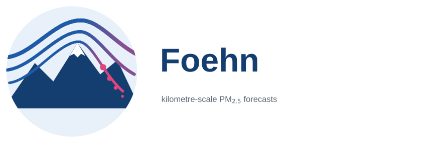

INAR Helsinki · LUT University · AMC-Lahti

Global kilometre-scale forecasts of fine particulate matter
Daily PM2.5 from all its sources (traffic, industry, heating, agriculture, desert dust, sea salt
and fires) for every inhabited place on Earth at 1 km, from one day to a week ahead, as a
calibrated ensemble. Foehn learns from the first global 1 km record of PM2.5, generates whole continents
in one pass by flow matching, and computes rather than learns the transport of the air with FLEXGREEN,
a GPU re-implementation of the backward mode of the FLEXPART particle model.
1 kmresolution, whole globe, no visible seam
7 dayscalibrated ensemble, to a week ahead
−17 %RMSE vs the operational CAMS forecast at 6,324 stations, 1 day ahead
75 %of the stations with lower error than CAMS